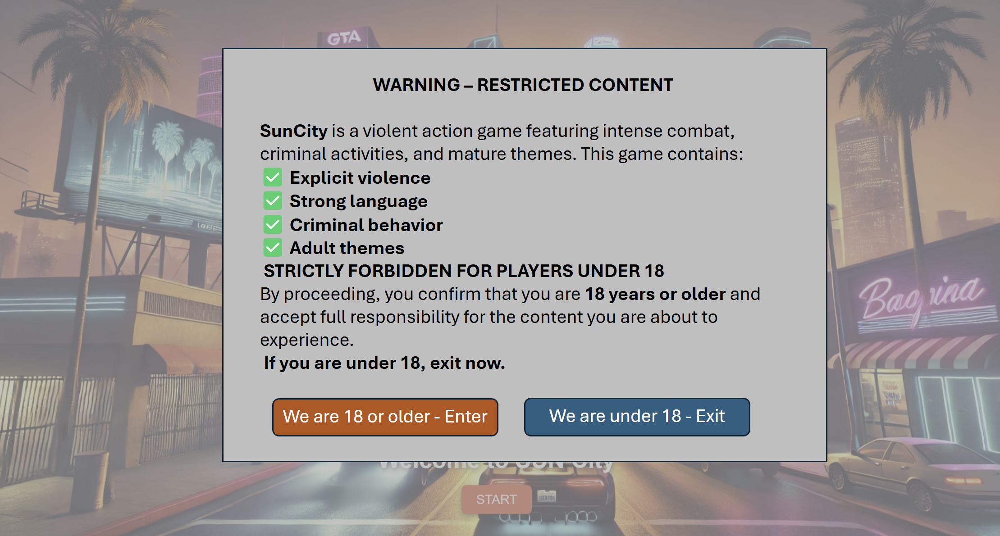

Our project's mockup
By Jean Dupont on 05/02/2024 at 09:00
Warning Page
When the players enters on our website, he must first confirm his age as the content of our game can include violence.
Homepage
On the homepage, the players have 3 possibilities:
- Play the game
- See the leaderboard
- Leave the game

Selection of the avater and the player
If the players click on the button "PLAY", they will be redirected to the selection of the avatar and the player. Both players can choose a different alias. The alias will serve to etablish the leaderboard. If an alias is already used, the new score will override the ancien one. Their location is by default automatically provided by an API. Howver, they can correct it if they want. Furthermore, they can choose between a set of avatars. They have just to drag and drop the wished one inside the dedicated field.
Count down
The countdown serves to prepare the players before the game starts. It allows them to get ready and to be in the best conditions to play. It last 3 seconds.

Game
The game page is divided in thow parts, one for each player. It includes the game field with the own view of the player and a board with the life points, the timers and some indications. At the top, there is a Pause button. At the bottom, there is two buttons as to play or stop the game music.
The game map is inspired of the city of Sierre, also called Sun City. We find the main streets, the traditional squares, the both lakes and some important buildings like the hospital or the police office. The game is in 2D. The players can only walk on street and on the gras. They can't walk neither on the buildings nor on the water nor through the trees.

Game pause
If one of the player click on the Pause button, the game will be paused and a popup appears. The players can decide either to continue the game, or to restart from beginning or to leave the game and go back to the homepage. By the two last options, the current score gets lost.

Game finished
If one of the player dies, the party is over. The winner and the loser are announced. After 5 seconds, the players are redirected to the leaderboard.
Leaderboard
On the leaderboard, the players can see all the result of the previous games. The leaderboard is sorted by the score. The player with the highest score is on the top. The score is calculated according to the time the player survived in Sun City.